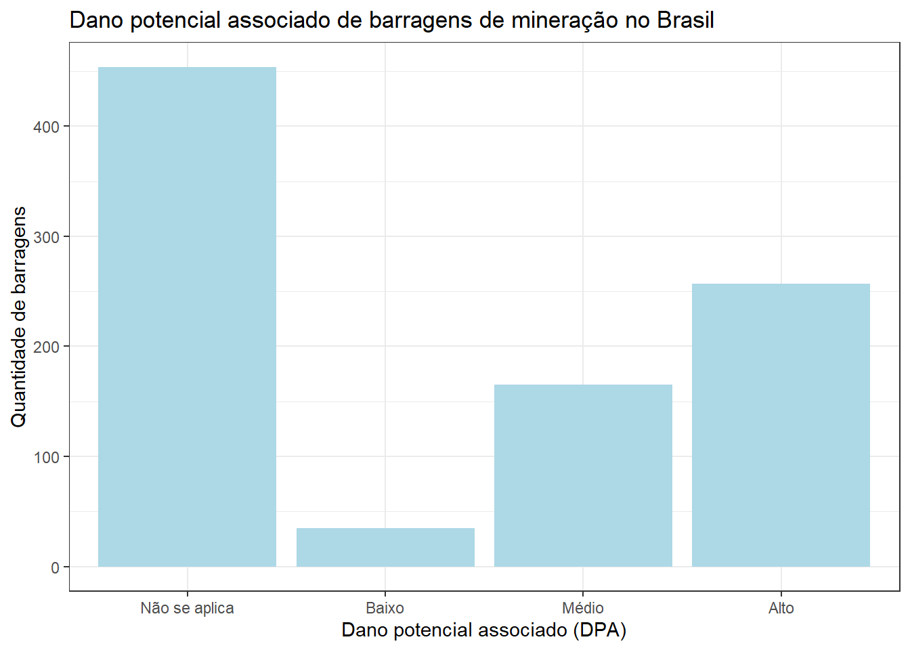

# Carregar pacotes:
library(janitor)
library(tidyverse)
library(readxl)Informações sobre as barragens
Objetivos
Este relatório tem como objetivo apresentar funcionalidades do R Markdown e do Quarto, utilizando dados públicos sobre barragens de mineração no Brasil.
Os objetivos específicos da análise são:
- fazer uma tabela das barragens por estado;
- fazer um gráfico do número de barragens por categoria de dano potencial associado;
Materiais e métodos
A base de dados disponibilizada pelo SIGBM - Sistema de Gestão de Segurança de Barragem de Mineração apresenta dados referentes à Barragens de Mineração no território brasileiro.

Carregando os pacotes
Download e leitura da base
Download
## ----download-data------------------
## # Fazer download da base de dados do dia atual:
## # url para baixar os dados
url_request <- "https://app.anm.gov.br/SIGBM/Publico/ClassificacaoNacionalDaBarragem/ExportarExcel"
##
## # cria a pasta dados (se não existir)
fs::dir_create("dados")
##
## # funcão que baixa os dados
httr::POST(url_request, httr::write_disk("dados/sigbm.xlsx"))Leitura
## ----load-data-----------------
# Importar a base de dados:
# ler os dados baixados
sigbm <- read_xlsx("dados/sigbm.xlsx", skip = 4) |>
clean_names()Data de atualização da base
# ----- data de atualização -----
data_atualizacao_sigbm <- read_xlsx("dados/sigbm.xlsx",
col_names = FALSE,
n_max = 1) |>
pull() |>
str_extract(":.*-") |>
str_remove(":") |>
str_remove("-") |>
str_trim()Barragens de mineração no Brasil
A base do SIGBM foi obtida no dia 16/08/2022, e apresentou informações referentes a 911.
Tabela
## ----tabela-top-10-------------------------
sigbm |>
count(uf, sort = TRUE) |>
slice(1:10) |>
select(`Estado` = uf, `Número de barragens` = n) |>
gt::gt(caption = "Dez estados brasileiros com mais barragens cadastradas no SIG-BM")| Estado | Número de barragens |
|---|---|
| MG | 346 |
| MT | 152 |
| PA | 114 |
| BA | 82 |
| SP | 68 |
| RO | 36 |
| GO | 22 |
| AP | 18 |
| MS | 18 |
| AM | 15 |
Gráfico
## ----plot-dpa---------------------------
sigbm |>
count(dano_potencial_associado) |>
mutate(
dano_potencial_associado = if_else(
dano_potencial_associado == "N/A",
"Não se aplica",
dano_potencial_associado
),
dano_potencial_associado = factor(
dano_potencial_associado,
levels = c("Não se aplica", "Baixo", "Médio", "Alto")
)
) |>
ggplot() +
aes(x = dano_potencial_associado, y = n) +
geom_col(fill = "lightblue") +
theme_bw() +
labs(x = "Dano potencial associado (DPA)", y = "Quantidade de barragens",
title = "Dano potencial associado de barragens de mineração no Brasil")